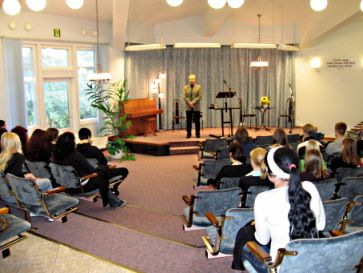
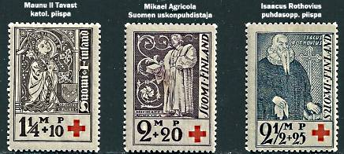
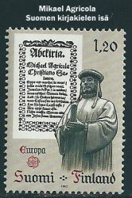
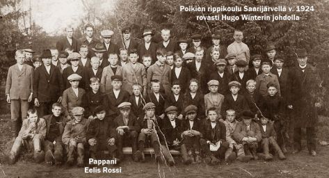
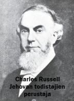
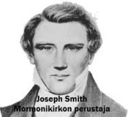

USKONTOOPPIMATERIAALIA NETISSÄ VUODESTA 1999 LÄHTIENPSYKOLOGIAN PIKALINKIT PSYKAN VIDEOABIKURSSIT: PSYKOLOGIAN MAAILMA -VIDEOKERTAUSKURSSI ABEILLE (vlogi) - uudet OPSit PS7 ABI KERTAUSKURSSI (opetustilanne) - VANHA OPS (OPS 2016 ja 2021): PS1 Toimiva ja oppiva ihminen PS2 Kehittyvä ihminen PS3 Tietoa käsittelevä ihminen PS4 Tunteet ja mielenterveys PS5 Yksilöllinen ja yhteisöllinen ihminen Uskonto: UE1 UE2 UE3 UE4 UE5 UE6 Filosofia: FI1 FI2 FI3 FI4 FI5  Kouluvierailulla Äänekosken Jehovan todistajien valtakunnansalilla. Uskonnon ja filosofian kursseja en enää päivitä. Kurssien oppisisällöt pohjautuvat vuoden 2005 opetussuunnitelmaan. Vuoden 2015 opetussuunnitelmassa tuli joitakin vähäisiä muutoksia, joten kurssien oppiaines vastaa suunnilleen lukion koko aineen sisältöä, mutta kurssikohtaisesti sisällöt ovat muuttuneet. |
UE5 Mihin suomalainen uskoo?
1. Tuhat vuotta suomalaista kristillisyyttä
2. Suomen lista: kymmenen kärjessä I TUHAT VUOTTA SUOMALAISTA KRISTILLISYYTTÄ1. Suomalainen muinaisusko (1000 j.Kr.)A. Muinaisuskon tutkimuslähteitä
• arkeologiset löydöt B. Vainajienpalvonta
• usko elämän jatkumiseen kuolemanjälkeen C. Haltijausko
• Agricola luetteloi hämäläisten ja karjalaisten jumalia 2. Kristinuskon tulo Suomeen ja katolinen aika (1000-1500-luvut)A. Varhaisimmat vaikutteet
• kaupankäynnin ohessa sekä idästä että lännestä jo 800-luvulla B. Lähetystyö
• ortodoksimunkit idästä Novgorodin kautta C. Katolinen kirkko vakiinnuttaa asemaansa
• Suomi liitetään Upsalan arkkipiispan alaiseksi v. 1216 
• Maunu II Tavast Turun piispana (1412-1450)- suomenkielinen kansanopetus saarnatuolista - anekauppa alkaa - sielunmessuja • Turkuun katedraalikoulu 3. Uskonpuhdistus leviää Suomeen (1500-luku)A. Ruhtinasreformaatio Ruotsissa
• Kustaa Vaasa Västeråsin valtiopäivillä 1527: "evankeliumia tulee puhtaasti saarnata". B. Uskonpuhdistus Suomessa

• Turun katedraalikoulun johtaja Pietari Särkilahti opetti pappeja luterilaisuuteen• Mikael Agricola (n. 1510-1557) - opiskeli Wittenbergissä Lutherin ja Melanchtonin oppilaana - laati suomen kirjakielen, koska halusi Raamatun suomeksi - 1543 ABC-kirja, 1544 Rukouskirja, 1548 UT suomeksi • teologisesti maltillista: messu suomeksi, sakramenteiksi kaste ja ehtoollinen 4. Luterilaisen ortodoksian aika (1600-luku)A. Kiista kirkon tunnustuksesta
• Ruotsin kuningas Juhana III (1568-1592) suosi katolisia B. Kollektiivinen uskonnollisuus
• yksimielisyys uskonnossa on tae valtiollisesta yhtenäisyydestä 5. Pietismi ja valistus tuulettavat suomalaista kristillisyyttä (1700-n.1850)A. Pietismin tulo Suomeen
• syntyi Saksassa Philip Jakob Spenerin toiminnasta (Pia Desideria -kirja) B. Herätysliikkeet syntyvät pietismin pohjalta
• varhaisempi herännäisyys alkoi kansanhurmoksista  - alkuna 1796 Pohjois-Savossa ollut hurmoksellinen herätys - Paavo Ruotsalainen, tunnettu sielunhoitaja ja julistaja - korostaa ns. odottavaa uskoa ja Kristuksen armon varaan jättäytymistä - Herättäjä-yhdistys - kannatusalue: Pohjois-Savo ja Pohjanmaa • EVANKELISUUS - alkuna F.G. Hedbergin ero heränneistä - korostaa ns. omistavaa uskoa ja pelastusvarmuutta kasteen kautta - SLEY - kannatusalue: Etelä- ja Lounais-Suomi sekä Etelä-Pohjanmaa • RUKOILEVAISUUS - alkuna paimentyttö Liisa Eerontyttären kääntymyksestä 1756 - korostaa rukousta ja pyhitystä - kannatusta Rauman ja Porin seudulla - Karjalan rukoilevaisuus syntyi Henrik Renqvistin toiminnasta • LESTADIOLAISUUS - alkuna Ruotsin Kaaresuvannon kirkkoherran Lars Levi Laestadiuksen julistus - korostaa parannusta ja armoa, synninpäästöä uskovien piirissä sekä eroa seurakunnan (uskovien) ja maailman välillä - pääsuuntana vanhoillislestadiolaisuus - kannatusalue: Lappi ja Pohjanmaa C. Valistuksen vaikutus Suomessa
• pietismin tavoin mursi kollektivismia 6. Valtiokirkosta kansankirkoksi (n. 1850-1917)A. Syitä valtiokirkkojärjestelmän murtumiselle
• ortodoksinen Venäjän keisari luterilaisen kirkon johtoon 1809 > alttarin ja valtaistuimen liitto B. Uskonnonvapauden aate nousussa
• kirkkoa kritisoitiin vanhoillisuudesta ja dogmatismista 7. Kirkko itsenäisyyden aikana (1917-)A. Kansalaissota ja uskonnonvapaus
• kirkko valkoisten puolella B. Toisesta maailmansodasta tähän päivään
• "koti, uskonto ja isänmaa" -aatteen nousu II SUOMEN LISTA: KYMMENEN KÄRJESSÄ1. Suomen evankelis-luterilainen kirkko - kirkko kansan rinnallaA. Opilliset juuret uskonpuhdistuksessa
• taustana Martti Luther ja Saksan uskonpuhdistus (1517 alkaen) B. Toimiva kirkko
• keskeisin toimintamuoto: jumalanpalvelus 
• kirkon kasvatustoiminta:- pyhäkoulut ja päiväkerhot - varhaisnuoriso- ja partiotyö - nuorisotyö ja rippikoulut - opiskelijatyö - raamattupiirit ja muu opetustyö • kirkon palvelutoiminta: - diakoniatyö ja yhteisvastuukeräys - perheneuvonta ja palveleva puhelin - sairaalasielunhoito • kirkon evankelioimistoiminta: - sisälähetys ja evankelioiminen - ulkosuomalais- ja lähetystyö C. Kirkon jäsenet ja hallinto (tiedot v.2012)
• n. 4,17 miljoonaa jäsentä (n. 77,3 %) 2. Ortodoksinen kirkko - loistokkuutta ja perinteitäA. Ortodoksisuuden historiaa Suomessa
• ensivaikutteet Novgorodista Karjalaan n. 1100-1200 -luvulla  B. Ortodoksinen oppi ja kultti
• oppi perustuu Raamatun lisäksi ortodoksiseen perinteeseen sekä kirkkoisien ja ekumeenisten kirkolliskokousten lausuntoihin 3. Helluntaiherätys - evankeliointia, ylistystä ja kielilläpuhumista
• syntyi Yhdysvalloissa 1900-luvun alussa 4. Islam - kristikunnan haastaja
• Suomeen turkkilais-tataarikauppiaitten mukana 1800-luvun lopulla 5. Jehovan todistajat - ovikellosi soi

• alkuna Charles Russellin toiminta USA:ssa 1870-luvulla• Suomeen 1900-luvun alussa • jäseniä n. 19 000 • opillisia korostuksia: - opin perustana Raamattu, jota tulkitsee oikein hallintoelin (ns. uskollinen orja) - oma Raamatun "Uuden maailman käännös" - kolminaisuusoppi ja Jeesuksen jumaluus kielletään > ei lueta kristillisiin kirkkoihin - pelastuksen takeena kuuliaisuus järjestölle - uskovien upotuskaste - laskelmat Jeesuksen paluusta ja lopun ajoista (v. 1914 historian käännekohtana) - tavoitteena iankaikkisuus paratiisimaassa, jota johtaa 144 000 taivaaseen pääsevää • torjuva asenne yhteiskuntaan: - kieltäytyminen varusmiespalveluksesta - isänmaallisuuden vastustaminen - kristillisten ja perheen juhlien hylkääminen - ei verensiirtoja tai veriruokia • tehokas koulutus ja ovityö • julkaisuja: Herätkää, Vartiotorni 6. Suomen Vapaakirkko - luterilaisuuden ja helluntailaisuuden välimaastossa
• Suomeen Ruotsista ja Englannista sivistyneistön tuomana 1870-luvulla (Radstock, Björkenheim, Boije) 7. Katolinen kirkko Suomessa - maailman suurimman sydänääniä
• katolisen kristillisyyden valtakausi Suomessa oli 1100-1500 -luvuilla 8. Adventtikirkko - Jeesuksen paluuta odottavien yhteisö
• alkuna am. William Millerin ennustukset Jeesuksen paluusta vuodelle 1844 9. Mormonit - maailmaan palautettu oikea alkukirkko

• Kirkon koko nimi: Myöhempien Aikojen Pyhien Jeesuksen Kristuksen Kirkko• perustana Isä Jumalan ja Jeesuksen ilmestyminen Joseph Smithille 1820 Yhdysvalloissa • Suomeen Ruotsista 1860-luvulla • jäseniä n. 4500 (2011, MAP-kirkon oma tieto, viralliset tilastot antavat n. 1000 jäsentä pienemmän määrän) • Raamatun ohella opin perustana kolme muuta kirjaa: Mormonin kirja, Opin ja Liittojen kirja, Kallisarvoinen helmi • opillisia erityispiirteitä: - perinteinen kolminaisuusoppi kielletään (kolme erillistä jumalaa) - pelastus Jeesuksen sovituksen kautta olemalla kuuliainen käskyille ja toimituksille - ihminen elänyt ennen syntymäänsä Jumalan henkilapsena taivaassa - taivaassa eri kirkkausasteita, joista korkeimpaan pyritään - kaste kuolleitten puolesta - temppelissä solmittava iankaikkisesti kestävä avioliitto - Pohjois- ja Etelä-Amerikka muodostavat ns. Siionin maan • Kirkkoa johtaa presidentti (profeetta ja ilmoituksen saaja) yhdessä kahdentoista apostolin kanssa. - kirkon presidentti voi saada uutta ilmoitusta Jumalalta - kaikki miespuoliset kelvolliset jäsenet voivat saada pappeuden - seurakuntaa johtaa piispa tai seurakunnanjohtaja, tehtävät vaihtuvat määrävuosin ja perustuu vapaaehtoisuuteen • toimintaa: - sakramenttikokoukset ja pyhäkoululuokat sunnuntaisin, miehille pappeusryhmät, naisille apuyhdistys ja nuoret osallistuvat nuorten naisten tai miesten järjestöön ja lapset alkeisyhdistykseen. - muuta toimintaa mm. konsertit, urheilutoiminta, partio, matkat, näytelmät ja tanssiaiset - rippikoulua vastaa nelivuotinen uskontoseminaari - halukkaat nuoret miehet ja naiset voivat palvella lähetystyössä 1.5-2 vuotta - ovelta ovelle -työ • julkaisu: Liahona 10. Pelastusarmeija - rauhan sotilaat
• teollistumisen tuomat ongelmat synnyttivät Lontoossa 1870-luvulla |